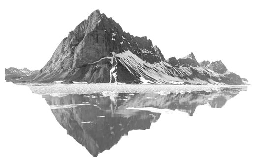

“Above all, never lose faith in your Father in Heaven, who loves you more than you can comprehend.”
- Jeffrey R. Holland
After graduation, I intend on persuing a career involving cybersecurity. I like to think that I'd live here in Utah, as it's my favorite, but if I had to move, I'd go to Montana (it's just as pretty). Some might call me crazy, but I've always liked the snow and the cold so I guess I'm a special kind of crazy. I've also thought heavily about joining a branch of military but that's more of a tentative plan than an actual one.
I've had to really think about my plans after graduation because they are always changing based on my interests and passions at the time I think of them. And there's always room for change. I could get my degree in IS and decide to go to law enforcement (which has been a legitimate thought of mine). However, I'm stubborn and refuse to back down from a challenge so I'm going to finishwhat I started here at Neumont and go from there.
